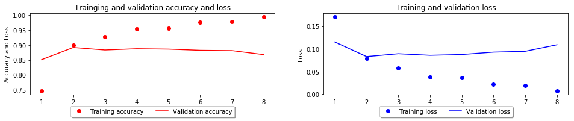

<!DOCTYPE html>
<html>
<head><meta name="generator" content="Hexo 3.8.0">
  <meta charset="utf-8">
  
  <title>딥러닝으로 영화 리뷰의 긍정/부정 이진 분류 모델 만들기 | 코딩크루 </title>
  <meta name="viewport" content="width=device-width, initial-scale=1, maximum-scale=1">
  
  <meta name="keywords" content="MLDNNKeras딥러닝으로 시리즈">
  
  
    <meta name="google-site-verification" content="2YVImY1fo1thQTx-sHmMQhhE7x9aoPG7F593q2qt734">
  
  
  
  
    <meta name="naver-site-verification" content="6e851ae0213de51257ab8801ac88ee25b5581313">
  
  <meta name="description" content="IMDB 데이터셋을 이용한 영화 리뷰 분류 : Binary Classification머신러닝은 크게 분류와 회귀 문제로 나누어 지게 됩니다.저희는 분류 문제에서도 이진분류를 진행해볼건데요.이진분류라는건 예를들어 메일을 받았을 때 이 메일이 스팸이냐 아니냐, 말을 했을 때 욕이냐 아니냐와 같이 문제에 대해 예/아니오 형태로 구분되는 문제에 적합합니다.   이">
<meta name="keywords" content="ML,DNN,Keras,딥러닝으로 시리즈">
<meta property="og:type" content="article">
<meta property="og:title" content="딥러닝으로 영화 리뷰의 긍정&#x2F;부정 이진 분류 모델 만들기">
<meta property="og:url" content="https://codingcrews.github.io/2019/01/11/imdb/index.html">
<meta property="og:site_name" content="코딩크루">
<meta property="og:description" content="IMDB 데이터셋을 이용한 영화 리뷰 분류 : Binary Classification머신러닝은 크게 분류와 회귀 문제로 나누어 지게 됩니다.저희는 분류 문제에서도 이진분류를 진행해볼건데요.이진분류라는건 예를들어 메일을 받았을 때 이 메일이 스팸이냐 아니냐, 말을 했을 때 욕이냐 아니냐와 같이 문제에 대해 예/아니오 형태로 구분되는 문제에 적합합니다.   이">
<meta property="og:locale" content="ko">
<meta property="og:image" content="https://codingcrews.github.io/2019/01/11/imdb/imdb_27_0.png">
<meta property="og:image" content="https://codingcrews.github.io/2019/01/11/imdb/imdb_33_0.png">
<meta property="og:image" content="https://codingcrews.github.io/2019/01/11/imdb/imdb_43_0.png">
<meta property="og:image" content="https://codingcrews.github.io/2019/01/11/imdb/imdb_47_0.png">
<meta property="og:image" content="https://codingcrews.github.io/2019/01/11/imdb/imdb_51_0.png">
<meta property="og:image" content="https://codingcrews.github.io/2019/01/11/imdb/imdb_55_0.png">
<meta property="og:updated_time" content="2019-01-29T18:37:56.098Z">
<meta name="twitter:card" content="summary">
<meta name="twitter:title" content="딥러닝으로 영화 리뷰의 긍정&#x2F;부정 이진 분류 모델 만들기">
<meta name="twitter:description" content="IMDB 데이터셋을 이용한 영화 리뷰 분류 : Binary Classification머신러닝은 크게 분류와 회귀 문제로 나누어 지게 됩니다.저희는 분류 문제에서도 이진분류를 진행해볼건데요.이진분류라는건 예를들어 메일을 받았을 때 이 메일이 스팸이냐 아니냐, 말을 했을 때 욕이냐 아니냐와 같이 문제에 대해 예/아니오 형태로 구분되는 문제에 적합합니다.   이">
<meta name="twitter:image" content="https://codingcrews.github.io/2019/01/11/imdb/imdb_27_0.png">
  
    <link rel="alternate" href="/atom.xml" title="코딩크루" type="application/atom+xml">
  

  

  <link rel="icon" href="/css/images/logo.png">
  <link rel="apple-touch-icon" href="/css/images/logo.png">
  
    <link href="//fonts.googleapis.com/css?family=Source+Code+Pro" rel="stylesheet" type="text/css">
  
  <link href="https://fonts.googleapis.com/css?family=Open+Sans|Montserrat:700" rel="stylesheet" type="text/css">
  <link href="https://fonts.googleapis.com/css?family=Roboto:400,300,300italic,400italic" rel="stylesheet" type="text/css">

  <!-- <link href="//cdn.bootcss.com/font-awesome/4.6.3/css/font-awesome.min.css" rel="stylesheet"> -->
  <!-- CDN 교체 -->
  <link href="/css/font-awesome.min.css" rel="stylesheet">

  <style type="text/css">
    /* @font-face{font-family:futura-pt;src:url(https://use.typekit.net/af/9749f0/00000000000000000001008f/27/l?subset_id=2&fvd=n5) format("woff2");font-weight:500;font-style:normal;} */
    /* @font-face{font-family:futura-pt;src:url(https://use.typekit.net/af/90cf9f/000000000000000000010091/27/l?subset_id=2&fvd=n7) format("woff2");font-weight:500;font-style:normal;} */
    /* @font-face{font-family:futura-pt;src:url(https://use.typekit.net/af/8a5494/000000000000000000013365/27/l?subset_id=2&fvd=n4) format("woff2");font-weight:lighter;font-style:normal;} */
    /* @font-face{font-family:futura-pt;src:url(https://use.typekit.net/af/d337d8/000000000000000000010095/27/l?subset_id=2&fvd=i4) format("woff2");font-weight:400;font-style:italic;} */
  </style>
  <link rel="stylesheet" href="/css/style.css">

  <script src="/js/jquery-3.1.1.min.js"></script>
  <script src="/js/bootstrap.js"></script>

  <!-- Bootstrap core CSS -->
  <link rel="stylesheet" href="/css/bootstrap.css">

  
    <link rel="stylesheet" href="/css/dialog.css">
  

  

  
    <link rel="stylesheet" href="/css/header-post.css">
  

  

  

</head>
</html>


  <body data-spy="scroll" data-target="#toc" data-offset="50">


  
  <div id="container">
    <div id="wrap">
      
        <header>

    <div id="allheader" class="navbar navbar-default navbar-static-top" role="navigation">
        <div class="navbar-inner">
          
          <div class="container"> 
            <button type="button" class="navbar-toggle" data-toggle="collapse" data-target=".navbar-collapse">
              <span class="sr-only">Toggle navigation</span>
              <span class="icon-bar"></span>
              <span class="icon-bar"></span>
              <span class="icon-bar"></span>
            </button>

            
              <a class="brand" style="
                 margin-top: 0px;" href="#" data-toggle="modal" data-target="#myModal">
                  
              </a>
            
            
            <div class="navbar-collapse collapse">
              <ul class="hnav navbar-nav">
                
                  <li> <a class="main-nav-link" href="/">Home</a> </li>
                
                  <li> <a class="main-nav-link" href="/study">study</a> </li>
                
                  <li> <a class="main-nav-link" href="/archives">Archives</a> </li>
                
                  <li> <a class="main-nav-link" href="/categories">Categories</a> </li>
                
                  <li> <a class="main-nav-link" href="/tags">Tags</a> </li>
                
                  <li> <a class="main-nav-link" href="/about">About</a> </li>
                
                  <li><div id="search-form-wrap">

    <form class="search-form">
        <input type="text" class="ins-search-input search-form-input" placeholder="">
        <button type="submit" class="search-form-submit"></button>
    </form>
    <div class="ins-search">
    <div class="ins-search-mask"></div>
    <div class="ins-search-container">
        <div class="ins-input-wrapper">
            <input type="text" class="ins-search-input" placeholder="Type something...">
            <span class="ins-close ins-selectable"><i class="fa fa-times-circle"></i></span>
        </div>
        <div class="ins-section-wrapper">
            <div class="ins-section-container"></div>
        </div>
    </div>
</div>
<script>
(function (window) {
    var INSIGHT_CONFIG = {
        TRANSLATION: {
            POSTS: 'Posts',
            PAGES: 'Pages',
            CATEGORIES: 'Categories',
            TAGS: 'Tags',
            UNTITLED: '(Untitled)',
        },
        ROOT_URL: '/',
        CONTENT_URL: '/content.json',
    };
    window.INSIGHT_CONFIG = INSIGHT_CONFIG;
})(window);
</script>
<script src="/js/insight.js"></script>

</div></li>
            </ul></div>
          </div>
                
      </div>
    </div>

</header>


      
            
      <div id="content" class="outer">
        
          <section id="main" style="float:none;"><article id="post-imdb" style="width: 75%; float:left;" class="article article-type-post" itemscope="" itemprop="blogPost">
  <div id="articleInner" class="article-inner">
    
    
      <header class="article-header">
        
  
    <h1 class="thumb" itemprop="name">
      딥러닝으로 영화 리뷰의 긍정/부정 이진 분류 모델 만들기
    </h1>
  

      </header>
    
    <div class="article-meta">
      
	<a href="/2019/01/11/imdb/" class="article-date">
	  <time datetime="2019-01-10T16:55:22.000Z" itemprop="datePublished">2019-01-11</time>
	</a>

      
    <a class="article-category-link" href="/categories/ml/">ML</a>

      
	<a class="article-views">
	<span id="busuanzi_container_page_pv">
		PV:<span id="busuanzi_value_page_pv"></span>
	</span>
	</a>

      

    </div>
    <div class="article-entry" itemprop="articleBody">
      
        <h1 id="IMDB-데이터셋을-이용한-영화-리뷰-분류-Binary-Classification"><a href="#IMDB-데이터셋을-이용한-영화-리뷰-분류-Binary-Classification" class="headerlink" title="IMDB 데이터셋을 이용한 영화 리뷰 분류 : Binary Classification"></a>IMDB 데이터셋을 이용한 영화 리뷰 분류 : Binary Classification</h1><p>머신러닝은 크게 분류와 회귀 문제로 나누어 지게 됩니다.<br>저희는 분류 문제에서도 이진분류를 진행해볼건데요.<br>이진분류라는건 예를들어 메일을 받았을 때 이 메일이 스팸이냐 아니냐, 말을 했을 때 욕이냐 아니냐와 같이 문제에 대해 <strong>예/아니오</strong> 형태로 구분되는 문제에 적합합니다.  </p>
<p>이번에는 IMDB 데이터셋을 이용해 해당 리뷰가 긍정적인지 부정적인지 예측하는 이진 분류 모델을 만들어 보겠습니다.  </p>
<h1 id="Dataset"><a href="#Dataset" class="headerlink" title="Dataset"></a>Dataset</h1><p>IMDB 데이터셋이란 영화에 대한 평점과 리뷰들이 들어가있는 데이터인데요, <strong>(영어로 되어 있습니다.)</strong>  </p>
<p>추후에는 한글로 된 데이터셋을 직접 구하고 만들어서 분류기를 만들어보시면 재밌지 않을까요? </p>
<h2 id="Download"><a href="#Download" class="headerlink" title="Download"></a>Download</h2><p>데이터셋은 텐서플로의 패키지 안에 다운로더 및 로더가 내장되어 있습니다.<br>(포스팅 시각 기준으로 저는 r1.12 버전의 텐서플로 패키지를 사용중이며, 너무 오래된 버전의 경우 keras 패키지가 내장되어 있지 않을 수 있습니다.)</p>
<figure class="highlight python"><table><tr><td class="gutter"><pre><span class="line">1</span><br></pre></td><td class="code"><pre><span class="line"><span class="keyword">from</span> tensorflow.keras.datasets <span class="keyword">import</span> imdb</span><br></pre></td></tr></table></figure>
<figure class="highlight python"><table><tr><td class="gutter"><pre><span class="line">1</span><br></pre></td><td class="code"><pre><span class="line">(train_data, train_labels), (test_data, test_labels) = imdb.load_data(num_words=<span class="number">10000</span>)</span><br></pre></td></tr></table></figure>
<h2 id="Dataset-shape-확인"><a href="#Dataset-shape-확인" class="headerlink" title="Dataset shape 확인"></a>Dataset shape 확인</h2><figure class="highlight python"><table><tr><td class="gutter"><pre><span class="line">1</span><br><span class="line">2</span><br></pre></td><td class="code"><pre><span class="line">print(<span class="string">"Train Datas Shape : &#123;&#125;"</span>.format(train_data.shape))</span><br><span class="line">print(<span class="string">"Train Labels Shape : &#123;&#125;"</span>.format(train_labels.shape))</span><br></pre></td></tr></table></figure>
<pre><code>Train Datas Shape : (25000,)
Train Labels Shape : (25000,)
</code></pre><h2 id="데이터-확인"><a href="#데이터-확인" class="headerlink" title="데이터 확인"></a>데이터 확인</h2><p>25000개의 훈련용 데이터셋이 존재하며, 각 인덱스는 단어 인덱스의 리스트를 가지고 있습니다.</p>
<figure class="highlight python"><table><tr><td class="gutter"><pre><span class="line">1</span><br><span class="line">2</span><br></pre></td><td class="code"><pre><span class="line">display(train_data[<span class="number">0</span>][:<span class="number">10</span>])</span><br><span class="line">display(train_labels)</span><br></pre></td></tr></table></figure>
<pre><code>[1, 14, 22, 16, 43, 530, 973, 1622, 1385, 65]


array([1, 0, 0, ..., 0, 1, 0])
</code></pre><h3 id="단어-인덱스를-단어로-치환"><a href="#단어-인덱스를-단어로-치환" class="headerlink" title="단어 인덱스를 단어로 치환"></a>단어 인덱스를 단어로 치환</h3><figure class="highlight python"><table><tr><td class="gutter"><pre><span class="line">1</span><br><span class="line">2</span><br><span class="line">3</span><br><span class="line">4</span><br></pre></td><td class="code"><pre><span class="line">word_index = imdb.get_word_index()</span><br><span class="line">indexes = dict([(value, key) <span class="keyword">for</span> (key, value) <span class="keyword">in</span> word_index.items()])</span><br><span class="line">decoded_review = <span class="string">' '</span>.join(indexes.get(i - <span class="number">3</span>, <span class="string">'?'</span>) <span class="keyword">for</span> i <span class="keyword">in</span> train_data[<span class="number">0</span>])</span><br><span class="line">print(decoded_review)</span><br></pre></td></tr></table></figure>
<pre><code>? this film was just brilliant casting location scenery story direction everyone&apos;s really suited the part they played and you could just imagine being there robert ? is an amazing actor and now the same being director ? father came from the same scottish island as myself so i loved the fact there was a real connection with this film the witty remarks throughout the film were great it was just brilliant so much that i bought the film as soon as it was released for ? and would recommend it to everyone to watch and the fly fishing was amazing really cried at the end it was so sad and you know what they say if you cry at a film it must have been good and this definitely was also ? to the two little boy&apos;s that played the ? of norman and paul they were just brilliant children are often left out of the ? list i think because the stars that play them all grown up are such a big profile for the whole film but these children are amazing and should be praised for what they have done don&apos;t you think the whole story was so lovely because it was true and was someone&apos;s life after all that was shared with us all
</code></pre><h3 id="데이터-변환"><a href="#데이터-변환" class="headerlink" title="데이터 변환"></a>데이터 변환</h3><p>단어의 개수를 10,000개로 지정해두었고, 이 단어 인덱스를 원핫인코딩으로 변환하여 10,000차원의 벡터로 변경시키도록 합니다.  </p>
<figure class="highlight python"><table><tr><td class="gutter"><pre><span class="line">1</span><br><span class="line">2</span><br><span class="line">3</span><br><span class="line">4</span><br><span class="line">5</span><br><span class="line">6</span><br><span class="line">7</span><br></pre></td><td class="code"><pre><span class="line"><span class="keyword">import</span> numpy <span class="keyword">as</span> np</span><br><span class="line"></span><br><span class="line"><span class="function"><span class="keyword">def</span> <span class="title">vectorize_sequences</span><span class="params">(sequences, dimension=<span class="number">10000</span>)</span>:</span></span><br><span class="line">    results = np.zeros((len(sequences), dimension)) <span class="comment"># 크기가 들어온 리스트 (단어개수, 전체단어개수)이고, 모든 원소가 0인 행렬을 생성</span></span><br><span class="line">    <span class="keyword">for</span> i, sequence <span class="keyword">in</span> enumerate(sequences):</span><br><span class="line">        results[i, sequence] = <span class="number">1.</span></span><br><span class="line">    <span class="keyword">return</span> results</span><br></pre></td></tr></table></figure>
<figure class="highlight python"><table><tr><td class="gutter"><pre><span class="line">1</span><br><span class="line">2</span><br><span class="line">3</span><br><span class="line">4</span><br><span class="line">5</span><br></pre></td><td class="code"><pre><span class="line">x_train = vectorize_sequences(train_data)</span><br><span class="line">x_test = vectorize_sequences(test_data)</span><br><span class="line"></span><br><span class="line">display(x_train.shape)</span><br><span class="line">display(x_test.shape)</span><br></pre></td></tr></table></figure>
<pre><code>(25000, 10000)


(25000, 10000)
</code></pre><figure class="highlight python"><table><tr><td class="gutter"><pre><span class="line">1</span><br><span class="line">2</span><br><span class="line">3</span><br><span class="line">4</span><br><span class="line">5</span><br></pre></td><td class="code"><pre><span class="line">y_train = np.asarray(train_labels).astype(<span class="string">'float32'</span>)</span><br><span class="line">y_test = np.asarray(test_labels).astype(<span class="string">'float32'</span>)</span><br><span class="line"></span><br><span class="line">display(y_train)</span><br><span class="line">display(y_test)</span><br></pre></td></tr></table></figure>
<pre><code>array([1., 0., 0., ..., 0., 1., 0.], dtype=float32)


array([0., 1., 1., ..., 0., 0., 0.], dtype=float32)
</code></pre><h1 id="신경망-구성"><a href="#신경망-구성" class="headerlink" title="신경망 구성"></a>신경망 구성</h1><h2 id="신경망-네트워크-구축"><a href="#신경망-네트워크-구축" class="headerlink" title="신경망 네트워크 구축"></a>신경망 네트워크 구축</h2><figure class="highlight python"><table><tr><td class="gutter"><pre><span class="line">1</span><br><span class="line">2</span><br></pre></td><td class="code"><pre><span class="line"><span class="keyword">from</span> tensorflow.keras <span class="keyword">import</span> models</span><br><span class="line"><span class="keyword">from</span> tensorflow.keras <span class="keyword">import</span> layers</span><br></pre></td></tr></table></figure>
<figure class="highlight python"><table><tr><td class="gutter"><pre><span class="line">1</span><br><span class="line">2</span><br><span class="line">3</span><br><span class="line">4</span><br><span class="line">5</span><br><span class="line">6</span><br></pre></td><td class="code"><pre><span class="line">model = models.Sequential()</span><br><span class="line">model.add(layers.Dense(<span class="number">16</span>, activation=<span class="string">'relu'</span>, input_shape=(<span class="number">10000</span>, )))</span><br><span class="line">model.add(layers.Dense(<span class="number">16</span>, activation=<span class="string">'relu'</span>))</span><br><span class="line">model.add(layers.Dense(<span class="number">1</span>, activation=<span class="string">'sigmoid'</span>))</span><br><span class="line"></span><br><span class="line">model.summary()</span><br></pre></td></tr></table></figure>
<pre><code>_________________________________________________________________
Layer (type)                 Output Shape              Param #   
=================================================================
dense (Dense)                (None, 16)                160016    
_________________________________________________________________
dense_1 (Dense)              (None, 16)                272       
_________________________________________________________________
dense_2 (Dense)              (None, 1)                 17        
=================================================================
Total params: 160,305
Trainable params: 160,305
Non-trainable params: 0
_________________________________________________________________
</code></pre><h2 id="모델-컴파일"><a href="#모델-컴파일" class="headerlink" title="모델 컴파일"></a>모델 컴파일</h2><p>모델을 사용하기 위해선 네트워크를 구성한 모델을 컴파일하는 과정이 필요합니다.<br>rmsprop 옵티마이저를 사용하고,<br>확률을 출력하는 모델을 사용할 때는 크로스엔트로피가 최선의 선택인데,<br>이진 분류로 각 확률을 구하는 모델이니 binary crossentropy를 사용합니다.</p>
<figure class="highlight python"><table><tr><td class="gutter"><pre><span class="line">1</span><br><span class="line">2</span><br><span class="line">3</span><br><span class="line">4</span><br><span class="line">5</span><br><span class="line">6</span><br><span class="line">7</span><br><span class="line">8</span><br><span class="line">9</span><br><span class="line">10</span><br><span class="line">11</span><br><span class="line">12</span><br></pre></td><td class="code"><pre><span class="line"><span class="keyword">from</span> tensorflow.keras <span class="keyword">import</span> optimizers</span><br><span class="line"><span class="keyword">from</span> tensorflow.keras <span class="keyword">import</span> metrics</span><br><span class="line"><span class="keyword">from</span> tensorflow.keras <span class="keyword">import</span> losses</span><br><span class="line"></span><br><span class="line">model.compile(</span><br><span class="line"><span class="comment">#     optimizer='rmsprop',</span></span><br><span class="line">    optimizer=optimizers.RMSprop(lr=<span class="number">0.001</span>),</span><br><span class="line"><span class="comment">#     loss='binary_crossentropy',</span></span><br><span class="line">    loss=losses.binary_crossentropy,</span><br><span class="line"><span class="comment">#     metrics=['accuracy']</span></span><br><span class="line">    metrics=[metrics.binary_accuracy]</span><br><span class="line">)</span><br></pre></td></tr></table></figure>
<h2 id="검증-데이터-준비-Validation"><a href="#검증-데이터-준비-Validation" class="headerlink" title="검증 데이터 준비 (Validation)"></a>검증 데이터 준비 (Validation)</h2><p>훈련하는 동안 처음 본 데이터에 대한 모델의 정확도를 측정하기 위해<br>원본 훈련 데이터에서 10,000개의 샘플을 떼내어 검증 데이터 세트를 만들겠습니다.</p>
<figure class="highlight python"><table><tr><td class="gutter"><pre><span class="line">1</span><br><span class="line">2</span><br><span class="line">3</span><br><span class="line">4</span><br></pre></td><td class="code"><pre><span class="line">x_val = x_train[:<span class="number">10000</span>]</span><br><span class="line">partial_x_train = x_train[<span class="number">10000</span>:]</span><br><span class="line">y_val = y_train[:<span class="number">10000</span>]</span><br><span class="line">partial_y_train = y_train[<span class="number">10000</span>:]</span><br></pre></td></tr></table></figure>
<h1 id="모델-학습"><a href="#모델-학습" class="headerlink" title="모델 학습"></a>모델 학습</h1><p>512의 샘플씩 미니배치를 만들어 20번의 에폭동안 훈련시키고,<br>앞에서 떼어놓은 10,000개의 데이터를 이용해 손실과 정확도를 측정하겠습니다</p>
<figure class="highlight python"><table><tr><td class="gutter"><pre><span class="line">1</span><br><span class="line">2</span><br><span class="line">3</span><br><span class="line">4</span><br><span class="line">5</span><br><span class="line">6</span><br><span class="line">7</span><br></pre></td><td class="code"><pre><span class="line">history = model.fit(</span><br><span class="line">    partial_x_train,</span><br><span class="line">    partial_y_train,</span><br><span class="line">    epochs=<span class="number">20</span>,</span><br><span class="line">    batch_size=<span class="number">512</span>,</span><br><span class="line">    validation_data=(x_val, y_val),</span><br><span class="line">)</span><br></pre></td></tr></table></figure>
<pre><code>Train on 15000 samples, validate on 10000 samples
Epoch 1/20
15000/15000 [==============================] - 2s 139us/step - loss: 0.5883 - binary_accuracy: 0.7147 - val_loss: 0.5165 - val_binary_accuracy: 0.7686
Epoch 2/20
15000/15000 [==============================] - 1s 90us/step - loss: 0.4284 - binary_accuracy: 0.8771 - val_loss: 0.3974 - val_binary_accuracy: 0.8760
Epoch 3/20
15000/15000 [==============================] - 1s 85us/step - loss: 0.3157 - binary_accuracy: 0.9189 - val_loss: 0.3314 - val_binary_accuracy: 0.8880
Epoch 4/20
15000/15000 [==============================] - 1s 86us/step - loss: 0.2407 - binary_accuracy: 0.9349 - val_loss: 0.2963 - val_binary_accuracy: 0.8893
Epoch 5/20
15000/15000 [==============================] - 1s 85us/step - loss: 0.1912 - binary_accuracy: 0.9473 - val_loss: 0.2806 - val_binary_accuracy: 0.8906
Epoch 6/20
15000/15000 [==============================] - 1s 85us/step - loss: 0.1587 - binary_accuracy: 0.9555 - val_loss: 0.2811 - val_binary_accuracy: 0.8880
Epoch 7/20
15000/15000 [==============================] - 1s 85us/step - loss: 0.1303 - binary_accuracy: 0.9654 - val_loss: 0.2927 - val_binary_accuracy: 0.8850
Epoch 8/20
15000/15000 [==============================] - 1s 87us/step - loss: 0.1108 - binary_accuracy: 0.9707 - val_loss: 0.2976 - val_binary_accuracy: 0.8859
Epoch 9/20
15000/15000 [==============================] - 1s 87us/step - loss: 0.0930 - binary_accuracy: 0.9762 - val_loss: 0.3311 - val_binary_accuracy: 0.8771
Epoch 10/20
15000/15000 [==============================] - 1s 87us/step - loss: 0.0795 - binary_accuracy: 0.9802 - val_loss: 0.3353 - val_binary_accuracy: 0.8808
Epoch 11/20
15000/15000 [==============================] - 1s 87us/step - loss: 0.0652 - binary_accuracy: 0.9855 - val_loss: 0.3555 - val_binary_accuracy: 0.8786
Epoch 12/20
15000/15000 [==============================] - 1s 88us/step - loss: 0.0556 - binary_accuracy: 0.9881 - val_loss: 0.3749 - val_binary_accuracy: 0.8768
Epoch 13/20
15000/15000 [==============================] - 1s 91us/step - loss: 0.0442 - binary_accuracy: 0.9919 - val_loss: 0.4263 - val_binary_accuracy: 0.8694
Epoch 14/20
15000/15000 [==============================] - 1s 91us/step - loss: 0.0373 - binary_accuracy: 0.9934 - val_loss: 0.4213 - val_binary_accuracy: 0.8753
Epoch 15/20
15000/15000 [==============================] - 1s 90us/step - loss: 0.0305 - binary_accuracy: 0.9947 - val_loss: 0.4821 - val_binary_accuracy: 0.8657
Epoch 16/20
15000/15000 [==============================] - 1s 92us/step - loss: 0.0263 - binary_accuracy: 0.9955 - val_loss: 0.4871 - val_binary_accuracy: 0.8704
Epoch 17/20
15000/15000 [==============================] - 1s 91us/step - loss: 0.0178 - binary_accuracy: 0.9978 - val_loss: 0.5176 - val_binary_accuracy: 0.8693
Epoch 18/20
15000/15000 [==============================] - 1s 88us/step - loss: 0.0155 - binary_accuracy: 0.9982 - val_loss: 0.5890 - val_binary_accuracy: 0.8639
Epoch 19/20
15000/15000 [==============================] - 1s 91us/step - loss: 0.0136 - binary_accuracy: 0.9980 - val_loss: 0.5645 - val_binary_accuracy: 0.8679
Epoch 20/20
15000/15000 [==============================] - 1s 89us/step - loss: 0.0086 - binary_accuracy: 0.9990 - val_loss: 0.5974 - val_binary_accuracy: 0.8672
</code></pre><h2 id="모델의-훈련-정보-그리기"><a href="#모델의-훈련-정보-그리기" class="headerlink" title="모델의 훈련 정보 그리기"></a>모델의 훈련 정보 그리기</h2><p>위에서 fit의 반환으로 받은 history는 각각의 훈련 데이터세트와 검증 데이터세트에 대한 매 에폭마다의 손실율과 정확도를 가지고 있습니다.<br>해당 지표를 matplot를 이용해 시각화 하도록 해보겠습니다.</p>
<figure class="highlight python"><table><tr><td class="gutter"><pre><span class="line">1</span><br><span class="line">2</span><br><span class="line">3</span><br><span class="line">4</span><br><span class="line">5</span><br><span class="line">6</span><br><span class="line">7</span><br><span class="line">8</span><br><span class="line">9</span><br><span class="line">10</span><br><span class="line">11</span><br><span class="line">12</span><br><span class="line">13</span><br><span class="line">14</span><br><span class="line">15</span><br><span class="line">16</span><br><span class="line">17</span><br><span class="line">18</span><br><span class="line">19</span><br><span class="line">20</span><br><span class="line">21</span><br><span class="line">22</span><br><span class="line">23</span><br><span class="line">24</span><br><span class="line">25</span><br><span class="line">26</span><br><span class="line">27</span><br><span class="line">28</span><br><span class="line">29</span><br><span class="line">30</span><br><span class="line">31</span><br><span class="line">32</span><br><span class="line">33</span><br><span class="line">34</span><br><span class="line">35</span><br><span class="line">36</span><br></pre></td><td class="code"><pre><span class="line"><span class="keyword">import</span> matplotlib.pyplot <span class="keyword">as</span> plt</span><br><span class="line"></span><br><span class="line"><span class="function"><span class="keyword">def</span> <span class="title">show_graph</span><span class="params">(history)</span>:</span></span><br><span class="line">    history_dict = history.history</span><br><span class="line">    accuracy = history_dict[<span class="string">'binary_accuracy'</span>]</span><br><span class="line">    val_accuracy = history_dict[<span class="string">'val_binary_accuracy'</span>]</span><br><span class="line">    loss = history_dict[<span class="string">'loss'</span>]</span><br><span class="line">    val_loss = history_dict[<span class="string">'val_loss'</span>]</span><br><span class="line"></span><br><span class="line">    epochs = range(<span class="number">1</span>, len(loss) + <span class="number">1</span>)</span><br><span class="line">    </span><br><span class="line">    plt.figure(figsize=(<span class="number">16</span>, <span class="number">1</span>))</span><br><span class="line">    </span><br><span class="line">    plt.subplot(<span class="number">121</span>)</span><br><span class="line">    plt.subplots_adjust(top=<span class="number">2</span>)</span><br><span class="line">    plt.plot(epochs, accuracy, <span class="string">'ro'</span>, label=<span class="string">'Training accuracy'</span>)</span><br><span class="line">    plt.plot(epochs, val_accuracy, <span class="string">'r'</span>, label=<span class="string">'Validation accuracy'</span>)</span><br><span class="line">    plt.title(<span class="string">'Trainging and validation accuracy and loss'</span>)</span><br><span class="line">    plt.xlabel(<span class="string">'Epochs'</span>)</span><br><span class="line">    plt.ylabel(<span class="string">'Accuracy and Loss'</span>)</span><br><span class="line"></span><br><span class="line">    plt.legend(loc=<span class="string">'upper center'</span>, bbox_to_anchor=(<span class="number">0.5</span>, <span class="number">-0.1</span>),</span><br><span class="line">              fancybox=<span class="keyword">True</span>, shadow=<span class="keyword">True</span>, ncol=<span class="number">5</span>)</span><br><span class="line"><span class="comment">#     plt.legend(bbox_to_anchor=(1, -0.1))</span></span><br><span class="line"></span><br><span class="line">    plt.subplot(<span class="number">122</span>)</span><br><span class="line">    plt.plot(epochs, loss, <span class="string">'bo'</span>, label=<span class="string">'Training loss'</span>)</span><br><span class="line">    plt.plot(epochs, val_loss, <span class="string">'b'</span>, label=<span class="string">'Validation loss'</span>)</span><br><span class="line">    plt.title(<span class="string">'Training and validation loss'</span>)</span><br><span class="line">    plt.xlabel(<span class="string">'Epochs'</span>)</span><br><span class="line">    plt.ylabel(<span class="string">'Loss'</span>)</span><br><span class="line">    plt.legend(loc=<span class="string">'upper center'</span>, bbox_to_anchor=(<span class="number">0.5</span>, <span class="number">-0.1</span>),</span><br><span class="line">          fancybox=<span class="keyword">True</span>, shadow=<span class="keyword">True</span>, ncol=<span class="number">5</span>)</span><br><span class="line"><span class="comment">#     plt.legend(bbox_to_anchor=(1, 0))</span></span><br><span class="line"></span><br><span class="line">    plt.show()</span><br></pre></td></tr></table></figure>
<figure class="highlight python"><table><tr><td class="gutter"><pre><span class="line">1</span><br></pre></td><td class="code"><pre><span class="line">show_graph(history)</span><br></pre></td></tr></table></figure>
<p></p>
<p>훈련 데이터셋의 그래프를(점선) 먼저 확인해보면,<br>각 에폭이 돌때마다 정확도가 오르고, 손실은 줄어드는 형태로 제대로 학습이 된것 처럼 보이나, 검증 데이터셋(실선)을 보게 되면 그렇지 않습니다.<br>각 에폭마다도 정확도는 오르지 않고, 손실이 늘어나는걸 확인할 수 있는데, 이런 경우 훈련 데이터셋에 과대적합(overfitting) 되었다고 합니다.<br>과대적합이 된 경우 모델이 새로운 데이터셋을 만났을 때 제대로 분류를 하지 못하게 됩니다.</p>
<h2 id="모델-재학습하기"><a href="#모델-재학습하기" class="headerlink" title="모델 재학습하기"></a>모델 재학습하기</h2><p>아까와 동일한 형태의 모델을 구성하고,<br>학습과 관련된 하이퍼파라미터만 변경하여 과대적합을 피해보겠습니다.</p>
<figure class="highlight python"><table><tr><td class="gutter"><pre><span class="line">1</span><br><span class="line">2</span><br><span class="line">3</span><br><span class="line">4</span><br><span class="line">5</span><br><span class="line">6</span><br></pre></td><td class="code"><pre><span class="line">model = models.Sequential()</span><br><span class="line">model.add(layers.Dense(<span class="number">16</span>, activation=<span class="string">'relu'</span>, input_shape=(<span class="number">10000</span>, )))</span><br><span class="line">model.add(layers.Dense(<span class="number">16</span>, activation=<span class="string">'relu'</span>))</span><br><span class="line">model.add(layers.Dense(<span class="number">1</span>, activation=<span class="string">'sigmoid'</span>))</span><br><span class="line"></span><br><span class="line">model.summary()</span><br></pre></td></tr></table></figure>
<pre><code>_________________________________________________________________
Layer (type)                 Output Shape              Param #   
=================================================================
dense_3 (Dense)              (None, 16)                160016    
_________________________________________________________________
dense_4 (Dense)              (None, 16)                272       
_________________________________________________________________
dense_5 (Dense)              (None, 1)                 17        
=================================================================
Total params: 160,305
Trainable params: 160,305
Non-trainable params: 0
_________________________________________________________________
</code></pre><figure class="highlight python"><table><tr><td class="gutter"><pre><span class="line">1</span><br><span class="line">2</span><br><span class="line">3</span><br><span class="line">4</span><br><span class="line">5</span><br></pre></td><td class="code"><pre><span class="line">model.compile(</span><br><span class="line">    optimizer=optimizers.RMSprop(lr=<span class="number">0.001</span>),</span><br><span class="line">    loss=losses.binary_crossentropy,</span><br><span class="line">    metrics=[metrics.binary_accuracy]</span><br><span class="line">)</span><br></pre></td></tr></table></figure>
<figure class="highlight python"><table><tr><td class="gutter"><pre><span class="line">1</span><br><span class="line">2</span><br><span class="line">3</span><br><span class="line">4</span><br><span class="line">5</span><br><span class="line">6</span><br><span class="line">7</span><br></pre></td><td class="code"><pre><span class="line">history = model.fit(</span><br><span class="line">    partial_x_train,</span><br><span class="line">    partial_y_train,</span><br><span class="line">    epochs=<span class="number">8</span>,</span><br><span class="line">    batch_size=<span class="number">512</span>,</span><br><span class="line">    validation_data=(x_val, y_val),</span><br><span class="line">)</span><br></pre></td></tr></table></figure>
<pre><code>Train on 15000 samples, validate on 10000 samples
Epoch 1/8
15000/15000 [==============================] - 2s 111us/step - loss: 0.5347 - binary_accuracy: 0.7908 - val_loss: 0.4127 - val_binary_accuracy: 0.8663
Epoch 2/8
15000/15000 [==============================] - 1s 89us/step - loss: 0.3256 - binary_accuracy: 0.9005 - val_loss: 0.3316 - val_binary_accuracy: 0.8697
Epoch 3/8
15000/15000 [==============================] - 1s 88us/step - loss: 0.2393 - binary_accuracy: 0.9232 - val_loss: 0.2822 - val_binary_accuracy: 0.8906
Epoch 4/8
15000/15000 [==============================] - 1s 85us/step - loss: 0.1881 - binary_accuracy: 0.9410 - val_loss: 0.2801 - val_binary_accuracy: 0.8875
Epoch 5/8
15000/15000 [==============================] - 1s 85us/step - loss: 0.1525 - binary_accuracy: 0.9524 - val_loss: 0.2770 - val_binary_accuracy: 0.8885
Epoch 6/8
15000/15000 [==============================] - 1s 87us/step - loss: 0.1263 - binary_accuracy: 0.9611 - val_loss: 0.2856 - val_binary_accuracy: 0.8880
Epoch 7/8
15000/15000 [==============================] - 1s 87us/step - loss: 0.1035 - binary_accuracy: 0.9701 - val_loss: 0.3127 - val_binary_accuracy: 0.8846
Epoch 8/8
15000/15000 [==============================] - 1s 89us/step - loss: 0.0863 - binary_accuracy: 0.9754 - val_loss: 0.3270 - val_binary_accuracy: 0.8835
</code></pre><figure class="highlight python"><table><tr><td class="gutter"><pre><span class="line">1</span><br></pre></td><td class="code"><pre><span class="line">show_graph(history)</span><br></pre></td></tr></table></figure>
<p></p>
<p>아까보단 모델이 상대적으로 과대적합 되지 않았습니다.<br>손실 그래프를 확인했을 때 2에폭과 3에폭이 훈련 세트와 검증 세트가 가장 근접한 손실을 갖고있는걸 확인할 수 있고,<br>정확도 또한 2,3에폭이 가장 근접한걸 확인할 수 있습니다.<br>즉, 이 모델의 경우 2에폭 혹은 3에폭을 돌렸을 때 과대적합을 가장 피할 수 있는 학습상태가 된다는걸 확인할 수 있습니다.<br>이렇게 학습에 파라미터를 조작하는 것 이외에도 과대적합을 피하는 기법이 많이 존재합니다.  </p>
<h1 id="모델의-평가"><a href="#모델의-평가" class="headerlink" title="모델의 평가"></a>모델의 평가</h1><p>모델의 정확도를 측정합니다.</p>
<figure class="highlight python"><table><tr><td class="gutter"><pre><span class="line">1</span><br><span class="line">2</span><br></pre></td><td class="code"><pre><span class="line">loss, accuracy = model.evaluate(x_test, y_test)</span><br><span class="line">print(<span class="string">'accuracy : &#123;acc&#125;, loss : &#123;loss&#125;'</span>.format(acc=accuracy, loss=loss))</span><br></pre></td></tr></table></figure>
<pre><code>25000/25000 [==============================] - 2s 67us/step
accuracy : 0.86852, loss : 0.35010315059185027
</code></pre><h1 id="모델의-예측"><a href="#모델의-예측" class="headerlink" title="모델의 예측"></a>모델의 예측</h1><p>긍정이거나 부정일 확률 (높으면 긍정, 낮으면 부정)</p>
<figure class="highlight python"><table><tr><td class="gutter"><pre><span class="line">1</span><br></pre></td><td class="code"><pre><span class="line">model.predict(x_test[:<span class="number">10</span>])</span><br></pre></td></tr></table></figure>
<pre><code>array([[0.2251153 ],
       [0.9999784 ],
       [0.98094064],
       [0.94734573],
       [0.97099954],
       [0.9737046 ],
       [0.9995834 ],
       [0.01185756],
       [0.9645392 ],
       [0.99970514]], dtype=float32)
</code></pre><h1 id="번외-레이어-변경하여-정확도-개선해보기"><a href="#번외-레이어-변경하여-정확도-개선해보기" class="headerlink" title="번외. 레이어 변경하여 정확도 개선해보기"></a>번외. 레이어 변경하여 정확도 개선해보기</h1><h2 id="레이어를-한개-더-추가하여-테스트-Deep"><a href="#레이어를-한개-더-추가하여-테스트-Deep" class="headerlink" title="레이어를 한개 더 추가하여 테스트 (Deep)"></a>레이어를 한개 더 추가하여 테스트 (Deep)</h2><figure class="highlight python"><table><tr><td class="gutter"><pre><span class="line">1</span><br><span class="line">2</span><br><span class="line">3</span><br><span class="line">4</span><br><span class="line">5</span><br><span class="line">6</span><br><span class="line">7</span><br><span class="line">8</span><br><span class="line">9</span><br><span class="line">10</span><br><span class="line">11</span><br><span class="line">12</span><br><span class="line">13</span><br></pre></td><td class="code"><pre><span class="line">model = models.Sequential()</span><br><span class="line">model.add(layers.Dense(<span class="number">16</span>, activation=<span class="string">'relu'</span>, input_shape=(<span class="number">10000</span>, )))</span><br><span class="line">model.add(layers.Dense(<span class="number">16</span>, activation=<span class="string">'relu'</span>))</span><br><span class="line">model.add(layers.Dense(<span class="number">16</span>, activation=<span class="string">'relu'</span>))</span><br><span class="line">model.add(layers.Dense(<span class="number">1</span>, activation=<span class="string">'sigmoid'</span>))</span><br><span class="line"></span><br><span class="line">model.summary()</span><br><span class="line"></span><br><span class="line">model.compile(</span><br><span class="line">    optimizer=optimizers.RMSprop(lr=<span class="number">0.001</span>),</span><br><span class="line">    loss=losses.binary_crossentropy,</span><br><span class="line">    metrics=[metrics.binary_accuracy]</span><br><span class="line">)</span><br></pre></td></tr></table></figure>
<pre><code>_________________________________________________________________
Layer (type)                 Output Shape              Param #   
=================================================================
dense_6 (Dense)              (None, 16)                160016    
_________________________________________________________________
dense_7 (Dense)              (None, 16)                272       
_________________________________________________________________
dense_8 (Dense)              (None, 16)                272       
_________________________________________________________________
dense_9 (Dense)              (None, 1)                 17        
=================================================================
Total params: 160,577
Trainable params: 160,577
Non-trainable params: 0
_________________________________________________________________
</code></pre><figure class="highlight python"><table><tr><td class="gutter"><pre><span class="line">1</span><br><span class="line">2</span><br><span class="line">3</span><br><span class="line">4</span><br><span class="line">5</span><br><span class="line">6</span><br><span class="line">7</span><br></pre></td><td class="code"><pre><span class="line">history = model.fit(</span><br><span class="line">    partial_x_train,</span><br><span class="line">    partial_y_train,</span><br><span class="line">    epochs=<span class="number">8</span>,</span><br><span class="line">    batch_size=<span class="number">512</span>,</span><br><span class="line">    validation_data=(x_val, y_val),</span><br><span class="line">)</span><br></pre></td></tr></table></figure>
<pre><code>Train on 15000 samples, validate on 10000 samples
Epoch 1/8
15000/15000 [==============================] - 2s 113us/step - loss: 0.5264 - binary_accuracy: 0.7816 - val_loss: 0.4348 - val_binary_accuracy: 0.8122
Epoch 2/8
15000/15000 [==============================] - 1s 87us/step - loss: 0.2989 - binary_accuracy: 0.9006 - val_loss: 0.2936 - val_binary_accuracy: 0.8870
Epoch 3/8
15000/15000 [==============================] - 1s 85us/step - loss: 0.2103 - binary_accuracy: 0.9263 - val_loss: 0.2941 - val_binary_accuracy: 0.8812
Epoch 4/8
15000/15000 [==============================] - 1s 86us/step - loss: 0.1550 - binary_accuracy: 0.9481 - val_loss: 0.2963 - val_binary_accuracy: 0.8817
Epoch 5/8
15000/15000 [==============================] - 1s 89us/step - loss: 0.1294 - binary_accuracy: 0.9543 - val_loss: 0.2956 - val_binary_accuracy: 0.8850
Epoch 6/8
15000/15000 [==============================] - 1s 86us/step - loss: 0.0964 - binary_accuracy: 0.9709 - val_loss: 0.3357 - val_binary_accuracy: 0.8745
Epoch 7/8
15000/15000 [==============================] - 1s 86us/step - loss: 0.0814 - binary_accuracy: 0.9739 - val_loss: 0.3678 - val_binary_accuracy: 0.8714
Epoch 8/8
15000/15000 [==============================] - 1s 84us/step - loss: 0.0598 - binary_accuracy: 0.9834 - val_loss: 0.3910 - val_binary_accuracy: 0.8714
</code></pre><figure class="highlight python"><table><tr><td class="gutter"><pre><span class="line">1</span><br></pre></td><td class="code"><pre><span class="line">show_graph(history)</span><br></pre></td></tr></table></figure>
<p></p>
<h2 id="유닛을-추가하여-테스트-Wide"><a href="#유닛을-추가하여-테스트-Wide" class="headerlink" title="유닛을 추가하여 테스트 (Wide)"></a>유닛을 추가하여 테스트 (Wide)</h2><figure class="highlight python"><table><tr><td class="gutter"><pre><span class="line">1</span><br><span class="line">2</span><br><span class="line">3</span><br><span class="line">4</span><br><span class="line">5</span><br><span class="line">6</span><br><span class="line">7</span><br><span class="line">8</span><br><span class="line">9</span><br><span class="line">10</span><br><span class="line">11</span><br><span class="line">12</span><br></pre></td><td class="code"><pre><span class="line">model = models.Sequential()</span><br><span class="line">model.add(layers.Dense(<span class="number">64</span>, activation=<span class="string">'relu'</span>, input_shape=(<span class="number">10000</span>, )))</span><br><span class="line">model.add(layers.Dense(<span class="number">64</span>, activation=<span class="string">'relu'</span>))</span><br><span class="line">model.add(layers.Dense(<span class="number">1</span>, activation=<span class="string">'sigmoid'</span>))</span><br><span class="line"></span><br><span class="line">model.summary()</span><br><span class="line"></span><br><span class="line">model.compile(</span><br><span class="line">    optimizer=optimizers.RMSprop(lr=<span class="number">0.001</span>),</span><br><span class="line">    loss=losses.binary_crossentropy,</span><br><span class="line">    metrics=[metrics.binary_accuracy]</span><br><span class="line">)</span><br></pre></td></tr></table></figure>
<pre><code>_________________________________________________________________
Layer (type)                 Output Shape              Param #   
=================================================================
dense_10 (Dense)             (None, 64)                640064    
_________________________________________________________________
dense_11 (Dense)             (None, 64)                4160      
_________________________________________________________________
dense_12 (Dense)             (None, 1)                 65        
=================================================================
Total params: 644,289
Trainable params: 644,289
Non-trainable params: 0
_________________________________________________________________
</code></pre><figure class="highlight python"><table><tr><td class="gutter"><pre><span class="line">1</span><br><span class="line">2</span><br><span class="line">3</span><br><span class="line">4</span><br><span class="line">5</span><br><span class="line">6</span><br><span class="line">7</span><br></pre></td><td class="code"><pre><span class="line">history = model.fit(</span><br><span class="line">    partial_x_train,</span><br><span class="line">    partial_y_train,</span><br><span class="line">    epochs=<span class="number">8</span>,</span><br><span class="line">    batch_size=<span class="number">512</span>,</span><br><span class="line">    validation_data=(x_val, y_val),</span><br><span class="line">)</span><br></pre></td></tr></table></figure>
<pre><code>Train on 15000 samples, validate on 10000 samples
Epoch 1/8
15000/15000 [==============================] - 2s 135us/step - loss: 0.4850 - binary_accuracy: 0.7656 - val_loss: 0.3620 - val_binary_accuracy: 0.8517
Epoch 2/8
15000/15000 [==============================] - 2s 107us/step - loss: 0.2538 - binary_accuracy: 0.9058 - val_loss: 0.2754 - val_binary_accuracy: 0.8902
Epoch 3/8
15000/15000 [==============================] - 2s 103us/step - loss: 0.1857 - binary_accuracy: 0.9340 - val_loss: 0.2826 - val_binary_accuracy: 0.8874
Epoch 4/8
15000/15000 [==============================] - 2s 103us/step - loss: 0.1417 - binary_accuracy: 0.9499 - val_loss: 0.3328 - val_binary_accuracy: 0.8734
Epoch 5/8
15000/15000 [==============================] - 2s 104us/step - loss: 0.1128 - binary_accuracy: 0.9601 - val_loss: 0.3275 - val_binary_accuracy: 0.8826
Epoch 6/8
15000/15000 [==============================] - 2s 104us/step - loss: 0.0795 - binary_accuracy: 0.9743 - val_loss: 0.3473 - val_binary_accuracy: 0.8802
Epoch 7/8
15000/15000 [==============================] - 2s 103us/step - loss: 0.0544 - binary_accuracy: 0.9832 - val_loss: 0.3840 - val_binary_accuracy: 0.8780
Epoch 8/8
15000/15000 [==============================] - 2s 107us/step - loss: 0.0514 - binary_accuracy: 0.9849 - val_loss: 0.4150 - val_binary_accuracy: 0.8789
</code></pre><figure class="highlight python"><table><tr><td class="gutter"><pre><span class="line">1</span><br></pre></td><td class="code"><pre><span class="line">show_graph(history)</span><br></pre></td></tr></table></figure>
<p></p>
<h2 id="깊고-넓게-구성하기-Deep-and-wide-network"><a href="#깊고-넓게-구성하기-Deep-and-wide-network" class="headerlink" title="깊고 넓게 구성하기 (Deep and wide network)"></a>깊고 넓게 구성하기 (Deep and wide network)</h2><figure class="highlight python"><table><tr><td class="gutter"><pre><span class="line">1</span><br><span class="line">2</span><br><span class="line">3</span><br><span class="line">4</span><br><span class="line">5</span><br><span class="line">6</span><br><span class="line">7</span><br><span class="line">8</span><br><span class="line">9</span><br><span class="line">10</span><br><span class="line">11</span><br><span class="line">12</span><br><span class="line">13</span><br><span class="line">14</span><br></pre></td><td class="code"><pre><span class="line">model = models.Sequential()</span><br><span class="line">model.add(layers.Dense(<span class="number">64</span>, activation=<span class="string">'relu'</span>, input_shape=(<span class="number">10000</span>, )))</span><br><span class="line">model.add(layers.Dense(<span class="number">64</span>, activation=<span class="string">'relu'</span>))</span><br><span class="line">model.add(layers.Dense(<span class="number">32</span>, activation=<span class="string">'relu'</span>))</span><br><span class="line">model.add(layers.Dense(<span class="number">32</span>, activation=<span class="string">'relu'</span>))</span><br><span class="line">model.add(layers.Dense(<span class="number">1</span>, activation=<span class="string">'sigmoid'</span>))</span><br><span class="line"></span><br><span class="line">model.summary()</span><br><span class="line"></span><br><span class="line">model.compile(</span><br><span class="line">    optimizer=optimizers.RMSprop(lr=<span class="number">0.001</span>),</span><br><span class="line">    loss=losses.binary_crossentropy,</span><br><span class="line">    metrics=[metrics.binary_accuracy]</span><br><span class="line">)</span><br></pre></td></tr></table></figure>
<pre><code>_________________________________________________________________
Layer (type)                 Output Shape              Param #   
=================================================================
dense_13 (Dense)             (None, 64)                640064    
_________________________________________________________________
dense_14 (Dense)             (None, 64)                4160      
_________________________________________________________________
dense_15 (Dense)             (None, 32)                2080      
_________________________________________________________________
dense_16 (Dense)             (None, 32)                1056      
_________________________________________________________________
dense_17 (Dense)             (None, 1)                 33        
=================================================================
Total params: 647,393
Trainable params: 647,393
Non-trainable params: 0
_________________________________________________________________
</code></pre><figure class="highlight python"><table><tr><td class="gutter"><pre><span class="line">1</span><br><span class="line">2</span><br><span class="line">3</span><br><span class="line">4</span><br><span class="line">5</span><br><span class="line">6</span><br><span class="line">7</span><br></pre></td><td class="code"><pre><span class="line">history = model.fit(</span><br><span class="line">    partial_x_train,</span><br><span class="line">    partial_y_train,</span><br><span class="line">    epochs=<span class="number">8</span>,</span><br><span class="line">    batch_size=<span class="number">512</span>,</span><br><span class="line">    validation_data=(x_val, y_val),</span><br><span class="line">)</span><br></pre></td></tr></table></figure>
<pre><code>Train on 15000 samples, validate on 10000 samples
Epoch 1/8
15000/15000 [==============================] - 2s 142us/step - loss: 0.5094 - binary_accuracy: 0.7512 - val_loss: 0.3875 - val_binary_accuracy: 0.8442
Epoch 2/8
15000/15000 [==============================] - 2s 105us/step - loss: 0.2693 - binary_accuracy: 0.8983 - val_loss: 0.4223 - val_binary_accuracy: 0.8310
Epoch 3/8
15000/15000 [==============================] - 2s 105us/step - loss: 0.1949 - binary_accuracy: 0.9275 - val_loss: 0.5629 - val_binary_accuracy: 0.7950
Epoch 4/8
15000/15000 [==============================] - 2s 104us/step - loss: 0.1534 - binary_accuracy: 0.9434 - val_loss: 0.2965 - val_binary_accuracy: 0.8854
Epoch 5/8
15000/15000 [==============================] - 2s 105us/step - loss: 0.1106 - binary_accuracy: 0.9613 - val_loss: 0.3647 - val_binary_accuracy: 0.8718
Epoch 6/8
15000/15000 [==============================] - 2s 104us/step - loss: 0.0797 - binary_accuracy: 0.9733 - val_loss: 0.4042 - val_binary_accuracy: 0.8748
Epoch 7/8
15000/15000 [==============================] - 2s 110us/step - loss: 0.0802 - binary_accuracy: 0.9775 - val_loss: 0.4029 - val_binary_accuracy: 0.8815
Epoch 8/8
15000/15000 [==============================] - 2s 106us/step - loss: 0.0656 - binary_accuracy: 0.9827 - val_loss: 0.4207 - val_binary_accuracy: 0.8809
</code></pre><figure class="highlight python"><table><tr><td class="gutter"><pre><span class="line">1</span><br></pre></td><td class="code"><pre><span class="line">show_graph(history)</span><br></pre></td></tr></table></figure>
<p></p>
<h2 id="손실함수-변경"><a href="#손실함수-변경" class="headerlink" title="손실함수 변경"></a>손실함수 변경</h2><figure class="highlight python"><table><tr><td class="gutter"><pre><span class="line">1</span><br><span class="line">2</span><br><span class="line">3</span><br><span class="line">4</span><br><span class="line">5</span><br><span class="line">6</span><br><span class="line">7</span><br><span class="line">8</span><br><span class="line">9</span><br><span class="line">10</span><br><span class="line">11</span><br><span class="line">12</span><br><span class="line">13</span><br><span class="line">14</span><br></pre></td><td class="code"><pre><span class="line">model = models.Sequential()</span><br><span class="line">model.add(layers.Dense(<span class="number">64</span>, activation=<span class="string">'relu'</span>, input_shape=(<span class="number">10000</span>, )))</span><br><span class="line">model.add(layers.Dense(<span class="number">64</span>, activation=<span class="string">'relu'</span>))</span><br><span class="line">model.add(layers.Dense(<span class="number">32</span>, activation=<span class="string">'relu'</span>))</span><br><span class="line">model.add(layers.Dense(<span class="number">32</span>, activation=<span class="string">'relu'</span>))</span><br><span class="line">model.add(layers.Dense(<span class="number">1</span>, activation=<span class="string">'sigmoid'</span>))</span><br><span class="line"></span><br><span class="line">model.summary()</span><br><span class="line"></span><br><span class="line">model.compile(</span><br><span class="line">    optimizer=optimizers.RMSprop(lr=<span class="number">0.001</span>),</span><br><span class="line">    loss=losses.MSE,</span><br><span class="line">    metrics=[metrics.binary_accuracy]</span><br><span class="line">)</span><br></pre></td></tr></table></figure>
<pre><code>_________________________________________________________________
Layer (type)                 Output Shape              Param #   
=================================================================
dense_18 (Dense)             (None, 64)                640064    
_________________________________________________________________
dense_19 (Dense)             (None, 64)                4160      
_________________________________________________________________
dense_20 (Dense)             (None, 32)                2080      
_________________________________________________________________
dense_21 (Dense)             (None, 32)                1056      
_________________________________________________________________
dense_22 (Dense)             (None, 1)                 33        
=================================================================
Total params: 647,393
Trainable params: 647,393
Non-trainable params: 0
_________________________________________________________________
</code></pre><figure class="highlight python"><table><tr><td class="gutter"><pre><span class="line">1</span><br><span class="line">2</span><br><span class="line">3</span><br><span class="line">4</span><br><span class="line">5</span><br><span class="line">6</span><br><span class="line">7</span><br></pre></td><td class="code"><pre><span class="line">history = model.fit(</span><br><span class="line">    partial_x_train,</span><br><span class="line">    partial_y_train,</span><br><span class="line">    epochs=<span class="number">8</span>,</span><br><span class="line">    batch_size=<span class="number">512</span>,</span><br><span class="line">    validation_data=(x_val, y_val),</span><br><span class="line">)</span><br></pre></td></tr></table></figure>
<pre><code>Train on 15000 samples, validate on 10000 samples
Epoch 1/8
15000/15000 [==============================] - 2s 138us/step - loss: 0.1701 - binary_accuracy: 0.7462 - val_loss: 0.1152 - val_binary_accuracy: 0.8508
Epoch 2/8
15000/15000 [==============================] - 2s 103us/step - loss: 0.0794 - binary_accuracy: 0.8991 - val_loss: 0.0829 - val_binary_accuracy: 0.8917
Epoch 3/8
15000/15000 [==============================] - 2s 107us/step - loss: 0.0580 - binary_accuracy: 0.9281 - val_loss: 0.0892 - val_binary_accuracy: 0.8833
Epoch 4/8
15000/15000 [==============================] - 2s 111us/step - loss: 0.0375 - binary_accuracy: 0.9544 - val_loss: 0.0858 - val_binary_accuracy: 0.8876
Epoch 5/8
15000/15000 [==============================] - 2s 107us/step - loss: 0.0359 - binary_accuracy: 0.9560 - val_loss: 0.0874 - val_binary_accuracy: 0.8863
Epoch 6/8
15000/15000 [==============================] - 2s 107us/step - loss: 0.0216 - binary_accuracy: 0.9751 - val_loss: 0.0927 - val_binary_accuracy: 0.8822
Epoch 7/8
15000/15000 [==============================] - 2s 109us/step - loss: 0.0189 - binary_accuracy: 0.9782 - val_loss: 0.0946 - val_binary_accuracy: 0.8812
Epoch 8/8
15000/15000 [==============================] - 2s 107us/step - loss: 0.0068 - binary_accuracy: 0.9931 - val_loss: 0.1091 - val_binary_accuracy: 0.8678
</code></pre><figure class="highlight python"><table><tr><td class="gutter"><pre><span class="line">1</span><br></pre></td><td class="code"><pre><span class="line">show_graph(history)</span><br></pre></td></tr></table></figure>
<p></p>

      
    </div>
    <footer class="article-footer">
      
      
      <div>
        <ul class="post-copyright">
          <li class="post-copyright-author">
          <strong>Post author:  </strong>Rogiry
          </li>
          <li class="post-copyright-link">
          <strong>Post link:  </strong>
          <a href="/2019/01/11/imdb/" target="_blank" title="딥러닝으로 영화 리뷰의 긍정/부정 이진 분류 모델 만들기">https://codingcrews.github.io/2019/01/11/imdb/</a>
          </li>
          <li class="post-copyright-license">
            <strong>Copyright Notice:   </strong>
            All articles in this blog are licensed under <a rel="license" href="https://creativecommons.org/licenses/by-nc-nd/4.0/" target="_blank" title="Attribution-NonCommercial-NoDerivatives 4.0 International (CC BY-NC-ND 4.0)">CC BY-NC-ND 4.0</a>
            unless stating additionally.
          </li>
         
        </ul>
<div>
</div></div>
      
      
        
	<section id="comments" class="comment">
	  <div id="disqus_thread">
	  <noscript>Please enable JavaScript to view the <a href="//disqus.com/?ref_noscript">comments powered by Disqus.</a></noscript>
	  </div>
	</section>

	<script type="text/javascript">
	var disqus_shortname = 'codingcrews';
	(function(){
	  var dsq = document.createElement('script');
	  dsq.type = 'text/javascript';
	  dsq.async = true;
	  dsq.src = '//' + disqus_shortname + '.disqus.com/embed.js';
	  (document.getElementsByTagName('head')[0] || document.getElementsByTagName('body')[0]).appendChild(dsq);
	}());
	(function(){
	  var dsq = document.createElement('script');
	  dsq.type = 'text/javascript';
	  dsq.async = true;
	  dsq.src = '//' + disqus_shortname + '.disqus.com/count.js';
	  (document.getElementsByTagName('head')[0] || document.getElementsByTagName('body')[0]).appendChild(dsq);
	}());
	</script>


      
      

    </footer>
  </div>
  
    
<nav id="article-nav">
  
    <a href="/2019/01/14/reuter_multi_classification/" id="article-nav-newer" class="article-nav-link-wrap">
      <strong class="article-nav-caption">Newer</strong>
      <div class="article-nav-title">
        
          딥러닝으로 뉴스기사의 토픽을 분류해보자.
        
      </div>
    </a>
  
  
</nav>

  
</article>

<!-- Table of Contents -->

  <aside id="toc-sidebar">
    <div id="toc" class="toc-article">
    <strong class="toc-title">Contents</strong>
    
        <ol class="nav"><li class="nav-item nav-level-1"><a class="nav-link" href="#IMDB-데이터셋을-이용한-영화-리뷰-분류-Binary-Classification"><span class="nav-number">1.</span> <span class="nav-text">IMDB 데이터셋을 이용한 영화 리뷰 분류 : Binary Classification</span></a></li><li class="nav-item nav-level-1"><a class="nav-link" href="#Dataset"><span class="nav-number">2.</span> <span class="nav-text">Dataset</span></a><ol class="nav-child"><li class="nav-item nav-level-2"><a class="nav-link" href="#Download"><span class="nav-number">2.1.</span> <span class="nav-text">Download</span></a></li><li class="nav-item nav-level-2"><a class="nav-link" href="#Dataset-shape-확인"><span class="nav-number">2.2.</span> <span class="nav-text">Dataset shape 확인</span></a></li><li class="nav-item nav-level-2"><a class="nav-link" href="#데이터-확인"><span class="nav-number">2.3.</span> <span class="nav-text">데이터 확인</span></a><ol class="nav-child"><li class="nav-item nav-level-3"><a class="nav-link" href="#단어-인덱스를-단어로-치환"><span class="nav-number">2.3.1.</span> <span class="nav-text">단어 인덱스를 단어로 치환</span></a></li><li class="nav-item nav-level-3"><a class="nav-link" href="#데이터-변환"><span class="nav-number">2.3.2.</span> <span class="nav-text">데이터 변환</span></a></li></ol></li></ol></li><li class="nav-item nav-level-1"><a class="nav-link" href="#신경망-구성"><span class="nav-number">3.</span> <span class="nav-text">신경망 구성</span></a><ol class="nav-child"><li class="nav-item nav-level-2"><a class="nav-link" href="#신경망-네트워크-구축"><span class="nav-number">3.1.</span> <span class="nav-text">신경망 네트워크 구축</span></a></li><li class="nav-item nav-level-2"><a class="nav-link" href="#모델-컴파일"><span class="nav-number">3.2.</span> <span class="nav-text">모델 컴파일</span></a></li><li class="nav-item nav-level-2"><a class="nav-link" href="#검증-데이터-준비-Validation"><span class="nav-number">3.3.</span> <span class="nav-text">검증 데이터 준비 (Validation)</span></a></li></ol></li><li class="nav-item nav-level-1"><a class="nav-link" href="#모델-학습"><span class="nav-number">4.</span> <span class="nav-text">모델 학습</span></a><ol class="nav-child"><li class="nav-item nav-level-2"><a class="nav-link" href="#모델의-훈련-정보-그리기"><span class="nav-number">4.1.</span> <span class="nav-text">모델의 훈련 정보 그리기</span></a></li><li class="nav-item nav-level-2"><a class="nav-link" href="#모델-재학습하기"><span class="nav-number">4.2.</span> <span class="nav-text">모델 재학습하기</span></a></li></ol></li><li class="nav-item nav-level-1"><a class="nav-link" href="#모델의-평가"><span class="nav-number">5.</span> <span class="nav-text">모델의 평가</span></a></li><li class="nav-item nav-level-1"><a class="nav-link" href="#모델의-예측"><span class="nav-number">6.</span> <span class="nav-text">모델의 예측</span></a></li><li class="nav-item nav-level-1"><a class="nav-link" href="#번외-레이어-변경하여-정확도-개선해보기"><span class="nav-number">7.</span> <span class="nav-text">번외. 레이어 변경하여 정확도 개선해보기</span></a><ol class="nav-child"><li class="nav-item nav-level-2"><a class="nav-link" href="#레이어를-한개-더-추가하여-테스트-Deep"><span class="nav-number">7.1.</span> <span class="nav-text">레이어를 한개 더 추가하여 테스트 (Deep)</span></a></li><li class="nav-item nav-level-2"><a class="nav-link" href="#유닛을-추가하여-테스트-Wide"><span class="nav-number">7.2.</span> <span class="nav-text">유닛을 추가하여 테스트 (Wide)</span></a></li><li class="nav-item nav-level-2"><a class="nav-link" href="#깊고-넓게-구성하기-Deep-and-wide-network"><span class="nav-number">7.3.</span> <span class="nav-text">깊고 넓게 구성하기 (Deep and wide network)</span></a></li><li class="nav-item nav-level-2"><a class="nav-link" href="#손실함수-변경"><span class="nav-number">7.4.</span> <span class="nav-text">손실함수 변경</span></a></li></ol></li></ol>
    
    </div>
  </aside>

</section>
        
      </div>
      
      <footer id="footer">
  

  <div class="container">
      	<div class="row">
	      <p> Powered by <a href="http://hexo.io/" target="_blank">Hexo</a> and <a href="https://github.com/iTimeTraveler/hexo-theme-hiker" target="_blank">Hexo-theme-hiker</a> </p>
	      <p id="copyRightEn">Copyright &copy; 2019 - 2019 코딩크루 All Rights Reserved.</p>
	      
	      
    		<p class="busuanzi_uv">
				UV : <span id="busuanzi_value_site_uv"></span> |  
				PV : <span id="busuanzi_value_site_pv"></span>
		    </p>
  		   
		</div>

		
  </div>
</footer>


<!-- min height -->

<script>
    var wrapdiv = document.getElementById("wrap");
    var contentdiv = document.getElementById("content");
    var allheader = document.getElementById("allheader");

    wrapdiv.style.minHeight = document.body.offsetHeight + "px";
    if (allheader != null) {
      contentdiv.style.minHeight = document.body.offsetHeight - allheader.offsetHeight - document.getElementById("footer").offsetHeight + "px";
    } else {
      contentdiv.style.minHeight = document.body.offsetHeight - document.getElementById("footer").offsetHeight + "px";
    }
</script>
    </div>
    <!-- <nav id="mobile-nav">
  
    <a href="/" class="mobile-nav-link">Home</a>
  
    <a href="/study" class="mobile-nav-link">study</a>
  
    <a href="/archives" class="mobile-nav-link">Archives</a>
  
    <a href="/categories" class="mobile-nav-link">Categories</a>
  
    <a href="/tags" class="mobile-nav-link">Tags</a>
  
    <a href="/about" class="mobile-nav-link">About</a>
  
</nav> -->
    

<!-- mathjax config similar to math.stackexchange -->

<script type="text/x-mathjax-config">
  MathJax.Hub.Config({
    tex2jax: {
      inlineMath: [ ['$','$'], ["\\(","\\)"] ],
      processEscapes: true
    }
  });
</script>

<script type="text/x-mathjax-config">
    MathJax.Hub.Config({
      tex2jax: {
        skipTags: ['script', 'noscript', 'style', 'textarea', 'pre', 'code']
      }
    });
</script>

<script type="text/x-mathjax-config">
    MathJax.Hub.Queue(function() {
        var all = MathJax.Hub.getAllJax(), i;
        for(i=0; i < all.length; i += 1) {
            all[i].SourceElement().parentNode.className += ' has-jax';
        }
    });
</script>

<script type="text/javascript" src="https://cdnjs.cloudflare.com/ajax/libs/mathjax/2.7.1/MathJax.js?config=TeX-AMS-MML_HTMLorMML">
</script>


  <link rel="stylesheet" href="/fancybox/jquery.fancybox.css">
  <script src="/fancybox/jquery.fancybox.pack.js"></script>


<script src="/js/scripts.js"></script>


  <script src="/js/dialog.js"></script>


<!-- Google Analytics -->
<!-- <script type="text/javascript">
  (function(i,s,o,g,r,a,m){i['GoogleAnalyticsObject']=r;i[r]=i[r]||function(){
  (i[r].q=i[r].q||[]).push(arguments)},i[r].l=1*new Date();a=s.createElement(o),
  m=s.getElementsByTagName(o)[0];a.async=1;a.src=g;m.parentNode.insertBefore(a,m)
  })(window,document,'script','//www.google-analytics.com/analytics.js','ga');

  ga('create', 'UA-132432701-1', 'auto');
  ga('send', 'pageview');

</script> -->

<!-- Global site tag (gtag.js) - Google Analytics -->
<script async src="https://www.googletagmanager.com/gtag/js?id=UA-132432701-1"></script>
<script>
  window.dataLayer = window.dataLayer || [];
  function gtag(){dataLayer.push(arguments);}
  gtag('js', new Date());

  gtag('config', 'UA-132432701-1');
</script>
<!-- End Google Analytics -->


	<div style="display: none;">
    <script src="https://s95.cnzz.com/z_stat.php?id=1260716016&web_id=1260716016" language="JavaScript"></script>
  </div>


	<script async src="//busuanzi.ibruce.info/busuanzi/2.3/busuanzi.pure.mini.js">
	</script>


  </div>

  <div class="modal fade" id="myModal" tabindex="-1" role="dialog" aria-labelledby="myModalLabel" aria-hidden="true" style="display: none;">
  <div class="modal-dialog">
    <div class="modal-content">
      <div class="modal-header">
        <h2 class="modal-title" id="myModalLabel">설정</h2>
      </div>
      <hr style="margin-top:0px; margin-bottom:0px; width:80%; border-top: 3px solid #000;">
      <hr style="margin-top:2px; margin-bottom:0px; width:80%; border-top: 1px solid #000;">


      <div class="modal-body">
          <div style="margin:6px;">
            <a data-toggle="collapse" data-parent="#accordion" href="#collapseOne" onclick="javascript:setFontSize();" aria-expanded="true" aria-controls="collapseOne">
              글자크기
            </a>
          </div>
          <div id="collapseOne" class="panel-collapse collapse" role="tabpanel" aria-labelledby="headingOne">
          <div class="panel-body">
            페이지 글자 크기를 조정하였습니다
          </div>
        </div>


          <div style="margin:6px;">
            <a data-toggle="collapse" data-parent="#accordion" href="#collapseTwo" onclick="javascript:setBackground();" aria-expanded="true" aria-controls="collapseTwo">
              야간 모드
            </a>
        </div>
          <div id="collapseTwo" class="panel-collapse collapse" role="tabpanel" aria-labelledby="headingTwo">
          <div class="panel-body">
            다시 클릭하여 야간모드를 해제할 수 있습니다.
          </div>
        </div>

        <div>
            <a data-toggle="collapse" data-parent="#accordion" href="#collapseThree" aria-expanded="true" aria-controls="collapseThree">&nbsp;&nbsp;&nbsp;&nbsp;&nbsp;&nbsp;정 보&nbsp;&nbsp;&nbsp;&nbsp;&nbsp;&nbsp;</a>
        </div>
         <div id="collapseThree" class="panel-collapse collapse" role="tabpanel" aria-labelledby="headingThree">
          <div class="panel-body">
            코딩크루
          </div>
          <div class="panel-body">
            Copyright © 2019 Rogiry All Rights Reserved.
          </div>
        </div>
      </div>


      <hr style="margin-top:0px; margin-bottom:0px; width:80%; border-top: 1px solid #000;">
      <hr style="margin-top:2px; margin-bottom:0px; width:80%; border-top: 3px solid #000;">
      <div class="modal-footer">
        <button type="button" class="close" data-dismiss="modal" aria-label="Close"><span aria-hidden="true">×</span></button>
      </div>
    </div>
  </div>
</div>

  
  <a id="rocket" href="#top" class=""></a>
  <script type="text/javascript" src="/js/totop.js?v=1.0.0" async=""></script>
  
    <a id="menu-switch"><i class="fa fa-bars fa-lg"></i></a>
  
</body>
</html>